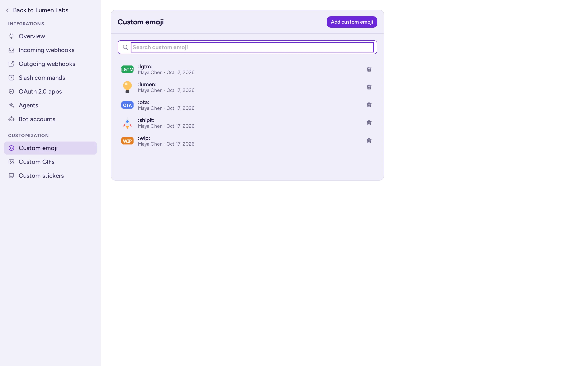

Aplicaciones e integraciones
Qué aplicaciones tienen tus miembros, qué puedes configurar tú mismo para tu comunidad y qué requiere un administrador de sistema.
Las aplicaciones de tus miembros
Antimatter incluye un conjunto de aplicaciones. A menos que un administrador de sistema las haya desactivado, todas las comunidades del servidor las tienen:
| Aplicación | Qué hace |
|---|---|
| Llamadas y canales de voz | Llamadas en cualquier canal y canales de voz: llamadas siempre abiertas en las que las personas entran y salen. |
| Encuestas | Encuestas en una conversación, con resultados en vivo, votos anónimos y una hora de finalización. /poll crea una. |
| Por hacer | Listas de tareas compartidas en cada canal y conversación, tantas como se necesiten, y listas personales. |
| Notas | Documentos editados en conjunto en tiempo real, compartidos con un canal o mantenidos como personales. |
| Pizarra | Pizarras compartidas con un canal o mantenidas como personales. |
| GIF y memes | Un selector de GIF y pegatinas, y memes creados a partir de plantillas, en el selector de emojis. |
| Calendario y correo | El calendario y el buzón de correo de cada persona, conectados a sus propias cuentas. |
| Chat con IA | Un panel lateral para hablar con los agentes de IA que un miembro puede utilizar, y acciones de IA sobre los mensajes. Los propios agentes los configura un administrador del sistema o tú en Configuración del equipo › IA (consulta Agentes). |
| GitHub, GitLab y Jira | Notificaciones y comandos para estos servicios, una vez conectados. |
Kanban (tableros de tarjetas en columnas, en su propio panel lateral) y Playbooks (listas de verificación para procesos repetibles, en su propio panel lateral) ya no se instalan de forma predeterminada: solicita a tu administrador del sistema cualquiera de ellos si tu servidor no lo tiene (consulta Aplicaciones incluidas).
La mayoría de las aplicaciones se abren desde la barra de aplicaciones, la columna de iconos en el borde derecho de la ventana. Las aplicaciones se activan o desactivan para todo el servidor, en Consola de sistema › Plugins: un administrador de comunidad no puede activar o desactivar una aplicación para una sola comunidad. Sus configuraciones también son para todo el servidor, excepto donde esta página indique lo contrario. Para añadir una aplicación o cambiar su configuración, consulta con tu administrador de sistema.
Dentro de una comunidad, las aplicaciones siguen los permisos de los canales: por ejemplo, las personas que solo pueden leer un canal pueden ver sus listas de tareas y notas, pero no modificarlas, y los administradores de un canal pueden eliminar sus notas. Los administradores y las personas con Gestionar mensajes pueden cerrar cualquier encuesta en el canal.
Las listas de tareas por hacer de un canal pertenecen a sus miembros: cualquier persona que pueda publicar en el canal puede agregar y marcar tareas, y renombrar o archivar una lista. Una lista se elimina por quien la creó, y una tarea por quien la agregó, o por los administradores del canal, los administradores de la comunidad y los administradores del sistema: otros miembros no pueden eliminarlas, incluso si pueden renombrar el canal. En un canal archivado o de solo lectura, las listas solo se pueden leer. Los invitados envían tareas por hacer solo a personas con las que comparten un canal.
Emojis personalizados
Los emojis personalizados son imágenes que las personas usan en mensajes y reacciones como cualquier otro emoji, escribiendo su nombre entre dos puntos, como :party_parrot:.
- Abre el selector de emojis (en el cuadro de mensaje, en las reacciones de un mensaje, o para tu estado).
- Elige + (Agregar emoji personalizado) junto al cuadro de búsqueda. El selector muestra su vista de agregado.
- Suelta, pega o elige una imagen: PNG, GIF (también animado), JPEG o WebP, de hasta 512 KB y 1028 × 1028 píxeles. El selector la previsualiza en los tamaños en que se muestran los emojis.
- Dale un nombre: letras minúsculas, números y
-,+o_, de hasta 64 caracteres. El selector indica de inmediato si el nombre ya está en uso o es un emoji estándar. - Elige Guardar. El nuevo emoji aparece primero en el selector, bajo Agregado recientemente.
El botón Emojis personalizados junto a + lista los emojis personalizados del servidor, con un cuadro de búsqueda, quién agregó cada uno y cuándo, y un botón de eliminación en aquellos que tienes permiso para eliminar. La misma lista está en Integraciones › Emojis personalizados.

- Los emojis personalizados pertenecen a todo el servidor, no a una comunidad: todos en el servidor pueden usarlos. Elige nombres que no choquen con los emojis de otras comunidades.
- Por defecto, todos los miembros pueden agregar emojis personalizados; los invitados no pueden agregar ni eliminar ninguno. Las personas pueden eliminar los propios; solo los administradores del sistema pueden eliminar los emojis de otras personas, así que pide a uno que elimine un emoji no deseado. Un administrador del sistema puede cambiar esto en los permisos del servidor, o desactivar los emojis personalizados con Habilitar Emoticonos Personalizados en la Consola de sistema.
GIF, pegatinas y memes
El selector de emojis tiene pestañas de GIFs, Stickers y Memes cuando estas aplicaciones están habilitadas.
- Los GIF y pegatinas provienen de un servicio de GIF elegido por el administrador del sistema, con una clasificación de contenido que este establece. Cuando el administrador del sistema lo permite, las personas pueden añadir sus propios GIF y pegatinas. De forma predeterminada, solo los administradores del sistema pueden hacerlo; el administrador del sistema puede abrirlo a todos, excepto a los invitados (Quién puede añadir GIF y pegatinas). En las pestañas de GIF y pegatinas, el + junto a la caja de búsqueda abre la vista de adición (Añadir un GIF, Añadir una pegatina) y el botón de gestión (Gestionar GIF, Gestionar pegatinas) lista lo que las personas han añadido, con quién y cuándo. GIF personalizados y Pegatinas personalizadas en las páginas de integraciones también funcionan. Los GIF y pegatinas añadidos están disponibles para todos en el servidor; quien los añadió, y los administradores del sistema, pueden eliminarlos.
- Memes: cualquiera elige una plantilla en la pestaña de Memes, escribe los subtítulos y publica el meme.
/memetambién funciona. De forma predeterminada, todos, excepto los invitados, pueden añadir una plantilla de meme con + junto a la caja de búsqueda de la pestaña de Memes, y el botón de gestión lista las plantillas personalizadas con quién las añadió y cuándo. Un administrador del sistema puede limitar esto a los administradores del sistema, o elegir Nadie (plantillas personalizadas desactivadas): las plantillas ya añadidas siguen siendo utilizables. Las plantillas se comparten por todo el servidor, y solo sus creadores y los administradores del sistema pueden eliminarlas.
En una comunidad pública, considere pedir a su administrador del sistema que mantenga las cargas de GIF y plantillas de memes solo para administradores.
Bibliotecas de pizarras
Los administradores de la comunidad pueden añadir bibliotecas de formas para todos en la comunidad: en una pizarra, abra el menú del tablero o el panel de bibliotecas y elija Gestionar bibliotecas. Una biblioteca es un archivo .excalidrawlib de hasta 5 MB.
Webhooks, comandos con barra diagonal y bots
Las integraciones conectan tu equipo con otras herramientas: un sistema de monitoreo que publica alertas, un formulario que publica sus respuestas, un comando que busca algo. Para configurarlas, abre el menú del equipo, elige Configuración del equipo y haz clic en Integraciones al final de sus pestañas. Verás los tipos de integración que puedes gestionar:
| Integración | Qué hace | Quién puede crearla, de forma predeterminada |
|---|---|---|
| Webhooks de Entrada | Otro servicio publica mensajes en un canal llamando a una URL secreta. | Administradores de la comunidad |
| Webhooks de Salida | Los mensajes con una palabra de activación en un canal se envían a otro servicio, que puede responder. O una acción de mensaje: las personas envían un mensaje al servicio desde el menú del mensaje. | Administradores de la comunidad |
| Comandos con barra diagonal | Un comando como /weather llama a otro servicio, que responde en el canal. | Administradores de la comunidad |
| Cuentas de bot | Cuentas para programas, que publican con su propio nombre y una etiqueta de BOT. | Administradores del sistema |
| Aplicaciones OAuth 2.0 | Aplicaciones que permiten a las personas iniciar sesión con su cuenta de Antimatter. | Administradores del sistema |
Acciones de mensaje
Un webhook saliente cuyo Disparar Cuando es Desde el menú de mensajes no se activa en los mensajes publicados. Se convierte en una acción en el menú de mensajes, bajo Más Acciones, en un grupo de Integraciones: al seleccionarla, se envía ese mensaje específico al servicio, que puede responder en el canal o solo a la persona. Asigne un título (el nombre de la acción en el menú) y, si lo desea, un Icono: una URL de imagen o una imagen subida, que se muestra en gris. Asóciela a un solo canal público, o deje el canal vacío para ofrecerla en todos los canales públicos de la comunidad. Al archivar un canal se eliminan los webhooks asociados a él, por lo que un canal archivado solo conserva las acciones de toda la comunidad. Los invitados solo ven las acciones asociadas a un canal en el que están.
Un rol personalizado con Gestionar integraciones permite a otras personas gestionar también webhooks y comandos con barra diagonal (ver Roles y permisos). Los webhooks y los comandos con barra diagonal pertenecen a la comunidad en la que se crearon.
Un administrador del sistema debe haber activado cada tipo de integración en Consola de sistema › Integraciones › Gestión de Integraciones. Los webhooks entrantes y salientes y los comandos con barra diagonal están activados por defecto; la creación de cuentas de bot está desactivada. Trata la URL de un webhook y el token de un comando como contraseñas: cualquiera que los tenga puede publicar en tu comunidad.
Para crear una integración, un bot o una aplicación, consulta Construir sobre Antimatter.
Enlaces automáticos
Los enlaces automáticos convierten texto, como números de incidencia, en enlaces en todos los mensajes de tu comunidad, sin necesidad de instalar una aplicación. Los administradores de la comunidad los configuran en Configuración del equipo › Enlaces automáticos; consulta Enlaces automáticos.
Playbooks
Un playbook es una lista de verificación para un proceso que se repite: gestionar una incidencia, incorporar a un nuevo compañero, preparar una versión. Cada vez que el proceso comienza, se ejecuta el playbook: Antimatter crea o utiliza un canal para la ejecución, donde se alojan la lista de verificación, su propietario y las actualizaciones de su estado.

Abre los Playbooks desde la barra de aplicaciones: su panel lateral muestra las ejecuciones y listas de verificación del canal. El botón en la parte superior del panel (Ver ejecuciones, playbooks y tareas) abre la vista de exploración, con Todas las ejecuciones, Todos los playbooks y Tus tareas, donde puedes crear un playbook (Crear playbook) o importar uno. El editor de playbooks ensancha el panel mientras está abierto. La entrada Automatización del canal… del canal, en su menú, permite configurar un mensaje de bienvenida, una categoría para los nuevos miembros y sugerencias de playbooks según palabras clave.
Los playbooks pertenecen a una comunidad. Por defecto, cualquier persona que pueda crear canales puede crear playbooks, por lo que, en la práctica, todos los miembros pueden hacerlo. Un playbook puede ser público para la comunidad o reservado para sus miembros.
Algunos buenos playbooks para una comunidad: dar la bienvenida a un nuevo moderador, gestionar un reporte, preparar un evento. Para una organización: respuesta a incidentes, llegada y salida de un empleado.